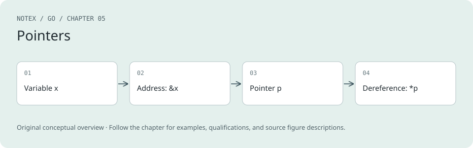

Chapter 5. Pointers
A Note for Early Release Readers
With Early Release ebooks, you get books in their earliest form—the author’s raw and unedited content as they write—so you can take advantage of these technologies long before the official release of these titles.
This will be the sixth chapter of the final book. Please note that the GitHub repo will be made active later on.
If you’d like to be actively involved in reviewing and commenting on this draft, please reach out to the editor at sgrey@oreilly.com.
Now that you’ve seen variables and functions, it’s time to learn about pointer syntax. Then I’ll clarify the behavior of pointers in Go by comparing them to the behavior of classes in other languages. You’ll also learn how and when to use pointers, how memory is allocated in Go, and how using pointers and values properly makes Go programs faster and more efficient.
A Quick Pointer Primer
Every variable is stored in one or more contiguous memory locations, called addresses.
A pointer is a variable that holds the location where a value is stored in memory. In other words, it contains that variable’s address. If you’ve taken computer-science courses, you might have seen a graphic to represent how variables are stored in memory. A representation of the following two variables would look something like Figure 5-1:
var x int32 = 10
var y bool = true
Variables in Memory
Figure 5-1. Storing two variables in memory
Different types of variables can take up different amounts of memory, which is called the size of the variable. In this example, you have two variables, x, which is a 32-bit integer, and y, which is a Boolean. Storing a 32-bit int requires 4 bytes, so the value for x is stored in 4 bytes, starting at address 1 and ending at address 4.
A Boolean requires only a single byte: you need only a bit to represent true or false, but the smallest amount of memory that can be independently addressed is a byte. Thus, the value for y is stored in one byte at address 5, with true represented by the value 1. Figure 5-2 demonstrates how the following pointers are stored in memory:
var x int32 = 10
var y bool = true
pointerX := &x
pointerY := &y
var pointerZ *string
Pointers in Memory
Figure 5-2. Storing pointers in memory
Because a pointer’s value is just the address of another variable, all pointers, no matter what type of variable they point to, have the exact same size. The examples in this chapter use 4-byte pointers, but computers with 64-bit CPUs use 8 bytes for a pointer. Our pointer to x, pointerX, is stored at location 6 and has the value 1, the address of x. Similarly, our pointer to y, pointerY, is stored at location 10 and has the value 5, the address of y. The last pointer, pointerZ, is stored at location 14 and has the value 0, because it doesn’t point to anything.
The zero value for a pointer is nil. You’ve seen nil a few times before, as the zero value for slices, maps, and functions. All these types are implemented with pointers. (Two more types, channels and interfaces, are also implemented with pointers. You’ll look at them in detail in Chapter 7 and Chapter 12.) As I covered in Chapter 2, nil is an untyped identifier that represents the lack of a value for certain types. Unlike NULL in C, nil is not another name for 0; you can’t convert it back and forth with a number.
Warning
As alluded to in Chapter 3, nil is a value defined in the universe block, so it can be shadowed. Never name a variable or function nil unless you are trying to trick your coworker and are unconcerned about your annual review.
Go’s pointer syntax is partially borrowed from C and C++. Since Go has a garbage collector, most memory-management pain is removed. Furthermore, some tricks that you can do with pointers in C and C++, including pointer arithmetic, are not allowed in Go.
Note
The Go standard library does have an unsafe package that lets you do some low-level operations on data structures. While C uses pointer manipulation for common operations, it is exceedingly rare for Go developers to use unsafe. You’ll take a quick look at it in Chapter 16.
The ampersand, &, is the address operator. It precedes a value type and returns the address where the value is stored:
x := "hello"
pointerToX := &x
The asterisk, *, is the indirection operator. It precedes a variable of +pointer_ type and returns the pointed-to value. This is called dereferencing:
x := 10
pointerToX := &x
fmt.Println(pointerToX) // prints a memory address
fmt.Println(*pointerToX) // prints 10
z := 5 + *pointerToX
fmt.Println(z) // prints 15
Before dereferencing a pointer, you must make sure that the pointer is non-nil. Your program will panic if you attempt to dereference a nil pointer:
var x *int
fmt.Println(x == nil) // prints true
fmt.Println(*x) // panics
A pointer type is a type that represents a pointer. It is written with an asterisk, *, before a type name. A pointer type can be based on any type:
x := 10
var pointerToX *int
pointerToX = &x
Just as variables can have pointer types, individual fields in a struct can be pointer types as well:
type person struct {
FirstName string
MiddleName *string
LastName string
}
Don’t Fear the Pointers
The first rule of pointers is: Don’t be afraid of pointers. If you are used to Java, JavaScript, Python, or Ruby, you might find them intimidating, but pointers are actually the familiar behavior for classes. It’s the nonpointer structs in Go that are unusual.
In Java and JavaScript, primitive types and classes behave differently. (Python and Ruby don’t have primitive values, but use immutable instances to simulate them.) When a primitive value is assigned to another variable or passed to a function or method, any changes made to the other variable won’t be reflected in the original, as shown in the Java code in Example 5-1.
Example 5-1. Assigning primitive variables doesn’t share memory in Java
int x = 10;
int y = x;
y = 20;
System.out.println(x); // prints 10
However, let’s take a look at what happens when an instance of a class is assigned to another variable or passed to a function or method. (The code in Example 5-2 is written in Python, but you can find similar code for Java, JavaScript, and Ruby in the sample_code/language_pointer_examples directory in the Chapter 6 repository.)
Example 5-2. Passing a class instance into a function in Python
class Foo:
def __init__(self, x):
self.x = x
def outer():
f = Foo(10)
inner1(f)
print(f.x)
inner2(f)
print(f.x)
g = None
inner2(g)
print(g is None)
def inner1(f):
f.x = 20
def inner2(f):
f = Foo(30)
outer()
Running this code prints the following output:
20
20
True
That’s because the following scenarios are true in Java, Python, JavaScript, and Ruby:
-
If you pass an instance of a class to a function and you change the value of a field, the change is reflected in the variable that was passed in.
-
If you reassign the parameter, the change is not reflected in the variable that was passed in.
-
If you pass nil/null/None for a parameter value, setting the parameter itself to a new value doesn’t modify the variable in the calling function.
Some people explain this behavior by saying that class instances are passed by reference in these languages. This is untrue. If they were being passed by reference, the second and third scenarios would change the variable in the calling function. These languages are always pass-by-value, just as in Go.
What you are seeing is that every instance of a class in these languages is implemented as a pointer. When a class instance is passed to a function or method, the value being copied is the pointer to the instance. Since outer and inner1 are referring to the same memory, changes made to fields in f in inner1 are reflected in the variable in outer. When inner2 reassigns f to a new class instance, this creates a separate instance and does not affect the variable in outer.
When you use a pointer variable or parameter in Go, you see the exact same behaviors. The difference between Go and these languages is that Go gives you the choice to use pointers or values for both primitives and structs. Most of the time, you should use a value. Values make it easier to understand how and when your data is modified. A secondary benefit is that using values reduces the amount of work that the garbage collector has to do. I’ll talk about that in “Reducing the Garbage Collector’s Workload”.
new
The built-in function new creates a pointer variable. It returns a pointer to an instance of the provided type or expression. If you pass a type to new, the pointer points to a zero-value instance of that type.
newFromType := new(int)
fmt.Println(newFromType == nil) // prints false
fmt.Println(*newFromType) // prints 0
The new function provides a convenient way to generate a pointer for a constant value. Unlike a variable, you can’t use an & before a constant or a primitive literal (such as numbers, Booleans, and strings) because they don’t have memory addresses; they exist only at compile time. Instead, wrap the constant or literal with a call to new:
newFromConstant := new(10)
fmt.Println(*newFromConstant) // prints 10
This works with struct fields as well:
p := person{
FirstName: "Pat",
MiddleName: new("Perry"),
LastName: "Peterson",
}
To create a pointer to an empty struct, you can pass the struct’s type to new, pass a struct literal to new, or use an & before a struct literal. All of these statements are functionally equivalent:
x := new(person)
y := new(person{})
z := &person{}
The new() function, variables, and shallow copies
You can use new with a variable as well. There is, however, a big difference between using an & before a variable and passing a variable to new. When you use the & operator, it returns the memory address where the variable is stored. When you pass a variable to new, it allocates new memory (perhaps unsurprisingly, given the name), copies the value of the variable into that new memory, and returns the memory address of that copy. This means that modifications to the variable returned from new are made to a copy, but modifications to the variable returned by using the & operator are made to the original:
a := "hello"
newA := new(a)
fmt.Println(*newA) // prints hello
*newA = "goodbye"
fmt.Println(*newA, a) // prints goodbye hello
addressOfA := &a
fmt.Println(*addressOfA) // prints hello
*addressOfA = "peace"
fmt.Println(*addressOfA, a) // prints peace peace
The copy made by new is a shallow copy. All values are duplicated from the original to the copy, but when the value being copied is a pointer, the copy points to the same memory address as the original; the pointed-to memory isn’t duplicated.
The difference between new and &
Figure 5-3. The difference between new and &
The flow through this code is shown in the memory chart in Figure 5-3, which needs a little explanation. A string is implemented like a struct, with two fields. One field is the length of the string; the other is a pointer to memory where the string’s bytes are stored. When you call new(a), a new block of memory is created with a copy of the string’s length and pointer. A new pointer variable is also created; its value is the memory address where that copy is stored. The pointers in both a and newA point to the same memory, but Go does not let you directly access the memory holding the string’s bytes unless you do terrible things via the unsafe package. (For those who love to do terrible things, see Chapter 16.) Changing the value of the string pointed to by newA modifies the copy and the original a is untouched.
Meanwhile, if you use the & operator, you create a variable whose value is the memory location of a. Since addressOfA points to a, any change made to the value stored at addressOfA also modifies a. This can lead to somewhat confusing behavior when you pass a struct variable to new:
bob := person{
FirstName: "Bob",
MiddleName: new("Robert"),
LastName: "Bobberson",
}
newBob := new(bob)
newBob.FirstName = "John"
*newBob.MiddleName = "Jingleheimer"
fmt.Println(bob.FirstName, newBob.FirstName) // prints Bob John
fmt.Println(*bob.MiddleName, *newBob.MiddleName) // prints Jingleheimer Jingleheimer
You might expect some consistency; either every change to newBob also changes bob, or none of them do. Why can you change the value of bob.MiddleName via newBob even though, in the previous example, you couldn’t change the value of a via newA? All of the fields in bob are copied to newBob. Making a change to FirstName or LastName in newBob has no effect on bob, because they are copies of a string. But MiddleName is a *string. Copying the value of the MiddleName field in bob means copying the memory address that MiddleName points to. Since the MiddleName field in both bob and newBob point to the same memory, a change to the value stored at that memory address shows up in both bob and newBob. The diagram in Figure 5-4 shows what happens in each step:
Using +new+ with a struct variable
Figure 5-4. Using new with a struct variable
If you assign a new pointer to newBob.MiddleName, bob and newBob will no longer share memory.
newBob.MiddleName = new("Doug")
fmt.Println(*bob.MiddleName, *newBob.MiddleName) // prints Jingleheimer Doug
This is shown in Figure 5-5:
Reassigning the pointer within the shallow copy
Figure 5-5. Reassigning the pointer within the shallow copy
Shallow copies are not unique to new; they’re everywhere in Go. As mentioned in “Copying Maps”, maps.Clone makes shallow copies of maps. The built-in copy function makes shallow copies of every duplicated slice entry. In fact, every time you call a function, the parameters are populated with shallow copies. The same is true in many programming languages with both value types and pointer types. (C++ and Swift are notable exceptions.)
Note
The new function gained the ability to create a pointer to an expression in Go 1.26. If you are using Go 1.25 or earlier, use a helper function instead:
func makePointer[T any](t T) *T {
return &t
}
With that function, you can now write:
p := person{
FirstName: "Pat",
MiddleName: makePointer("Perry"),
LastName: "Peterson",
}
Why does this work? When you pass a constant to a function, the constant is copied to a parameter, which is a variable. Since it’s a variable, it has an address in memory. The function then returns the variable’s memory address. This is effectively what the built-in new function is doing, too, which is why new creates a shallow copy of a variable when a variable is passed to it.
Writing generic functions is covered in Chapter 8.
Code Review: Intro to pointers, new, and shallow copies
-
Structs and primitive types in Go can be either pointers or values. In many other languages, primitive types are always values and classes are always pointers.
-
Use new to make a pointer out of a constant or literal value, or to make a non-nil pointer to an instance of a type.
-
When a variable is passed to new, it makes a pointer to a shallow copy of the variable. Pointer fields in the copy still alias the original’s data. Use & when you mean to reference the original, not duplicate it.
Exercises
These exercises will allow you to try out some of the pointer concepts that I’ve presented. The answers to the exercises are in the exercise_solutions directory in the Chapter 6 repository.
-
Given var p *int, write a program that prints the pointed-to value, or prints “no value” if p is nil. Make sure your program does not panic.
-
Write a program that declares a variable i
:=10. Use new to make a pointer to i and assign the pointer to a second variable, iNew. Modify the value of iNew. Guess whether the value of i changes, then print it out to check if you were correct. -
Repeat Exercise 2 with a variable ip and assign it the address of i. Modify the value of ip and predict whether the value of i will change. What is the difference between using new and using &?
Pointers Indicate Mutable Parameters
As you’ve already seen, Go constants provide names for literal expressions that can be calculated at compile time. Go has no mechanism to declare that other kinds of values are immutable. Modern software engineering embraces immutability. MIT’s course on software construction sums up the reasons: “Immutable types are safer from bugs, easier to understand, and more ready for change. Mutability makes it harder to understand what your program is doing, and much harder to enforce contracts.”
Go’s lack of immutable declarations might seem problematic, but the ability to choose between value and pointer parameter types addresses the issue. The course materials go on to explain that “using mutable objects is just fine if you are using them entirely locally within a method, and with only one reference to the object.” Rather than declaring that some variables and parameters are immutable, Go developers use pointers to indicate that a parameter is mutable.
Since Go is a call-by-value language, the values passed to functions are copies. For nonpointer types like primitives, structs, and arrays, this means that the called function cannot modify the original. Since the called function has a copy of the original data, the original data’s immutability is guaranteed.
However, if a pointer is passed to a function, the function gets a copy of the pointer that still points to the original data. This means that the called function can modify the original data.
This has a couple of implications. The first is that, when you pass a nil pointer to a function, you cannot make the value non-nil. You can reassign the value only if a value was already assigned to the pointer. While this can be confusing at first, it makes sense. Since the memory location was passed to the function through call-by-value, you can’t change the memory address, any more than you could change the value of an int parameter. You can demonstrate this with the following program:
func failedUpdate(g *int) {
x := 10
g = &x
}
func main() {
var f *int // f is nil
failedUpdate(f)
fmt.Println(f) // prints nil
}
The flow through this code is shown in Figure 5-6.
Failing To Update a nil Pointer
Figure 5-6. Failing to update a nil pointer
You’ll start with a nil variable f in main. When you call failedUpdate, copy the value of f, which is nil, into the parameter named g. This means that g is also set to nil. Then declare a new variable x within failedUpdate with the value 10. Next, change g in failedUpdate to point to x. This does not change the f in main. When you exit failedUpdate and return to main, f is still nil.
The second implication of copying a pointer is that, if you want the value assigned to a pointer parameter to still be there when you exit the function, you must dereference the pointer and set the value. If you change the pointer, you have changed the copy, not the original. Dereferencing puts the new value in the memory location to which both the original and the copy point. Here’s a short program that shows how this works:
func failedUpdate(px *int) {
x2 := 20
px = &x2
}
func update(px *int) {
*px = 20
}
func main() {
x := 10
failedUpdate(&x)
fmt.Println(x) // prints 10
update(&x)
fmt.Println(x) // prints 20
}
The flow through this code is shown in Figure 5-7.
In this example, you start with x in main set to 10. When you call failedUpdate, you copy the address of x into the parameter px. Next, you declare x2 in failedUpdate, set to 20. You then point px in failedUpdate to the address of x2. When you return to main, the value of x is unchanged. When you call update, you copy the address of x into px again. However, this time you change the value of what px in update points to: the variable x in main. When you return to main, x has been changed.
The Wrong Way and The Right Way To Update a Pointer
Figure 5-7. The wrong way and the right way to update a pointer
Pointers Are a Last Resort
Be careful when using pointers in Go. As discussed earlier, they make it harder to understand data flow and can create extra work for the garbage collector. Rather than populating a struct by passing a pointer to it into a function, have the function instantiate and return the struct (see Examples 5-3 and 5-4).
Example 5-3. Don’t do this
func MakeFoo(f *Foo) error {
f.Field1 = "val"
f.Field2 = 20
return nil
}
Example 5-4. Do this
func MakeFoo() (Foo, error) {
f := Foo{
Field1: "val",
Field2: 20,
}
return f, nil
}
The only time you should use pointer parameters to modify a variable is when the function expects an interface. You’ll see this pattern when working with JSON (I’ll talk more about the JSON support in Go’s standard library in Chapter 13):
f := struct {
Name string `json:"name"`
Age int `json:"age"`
}{}
err := json.Unmarshal([]byte(`{"name": "Bob", "age": 30}`), &f)
The Unmarshal function populates a variable from a slice of bytes containing JSON. It is declared to take a slice of bytes and an any parameter. The value passed in for the any parameter must be a pointer. If it is not, an error is returned.
Why do you need to pass a pointer into Unmarshal? Why doesn’t it just return a value? There are two reasons. First, this function predates generics being added to Go, and without generics, it has no way to know what type of value to create and return.
The second reason is that passing in a pointer gives you control over memory allocation. Iterating over data and converting it from JSON to a Go struct is a common design pattern, so Unmarshal is optimized for this case. If the Unmarshal function returned a value and Unmarshal was called in a loop, one struct instance would be created on each loop iteration. This would create a lot more work for the garbage collector, slowing down your program. (You’ll see another use of this pattern in “Slices as Buffers”, and I’ll talk more about efficient memory usage in “Reducing the Garbage Collector’s Workload”.)
Because JSON integration is so common, new Go developers sometimes treat this API as a common case instead of the exception that it should be.
When returning values from a function, favor value types. Use a pointer type as a return type only if there is state within the data type that needs to be modified. When you look at I/O in Chapter 12, you’ll see this pattern with buffers for reading or writing data. In addition, some data types used with concurrency must always be passed as pointers. You’ll see those in Chapter 12.
Pointer Passing Performance
If a struct is large enough, you can improve its performance by using a pointer to the struct as either an input parameter or a return value. The time to pass a pointer into a function is constant for all data sizes: roughly one nanosecond. This makes sense, since a pointer is the same size for all data types. In contrast, passing a value into a function takes longer as the data gets larger: once the value gets to be around 10 MB of data, for instance, passing it will take about 0.14 milliseconds.
The behavior for returning a pointer versus returning a value is more interesting. For data structures smaller than 100,000 bytes, it’s actually slower to return a pointer type than a value type. For example, it takes around 7 nanoseconds to return a 100-byte data structure, but about 24 nanoseconds to return a pointer to that data structure. As your data structures get larger, the performance advantage flips. It takes around .87 milliseconds to return 10 megabytes of data, but only .28 milliseconds to return a pointer to it.1
You should be aware that these are very short times. For the vast majority of cases, the difference between using a pointer and a value won’t affect your program’s performance. But if you are passing megabytes of data between functions, consider using a pointer, even if the data is meant to be immutable.
The Zero Value Versus No Value
Go pointers are often used to indicate the difference between a variable or field that’s been assigned the zero value and one that hasn’t been assigned a value at all. If this distinction matters in your program, use a nil pointer to represent the unassigned variable or struct field.
Because pointers also indicate mutability, be careful when using this pattern. Rather than return a pointer set to nil from a function, use the comma ok idiom that you saw for maps and return a value type and a Boolean.
Remember, if a nil pointer is passed into a function via a parameter or a field on a parameter, you cannot set the value within the function because there’s nowhere to store it. If a non-nil value is passed in for the pointer, do not modify it unless you document the behavior.
Again, JSON conversions are the exception that proves the rule. When converting data back and forth from JSON (yes, I’ll talk more about the JSON support in Go’s standard library in Chapter 13), you often need a way to differentiate between the zero value and not having a value assigned at all. Use a pointer value for fields in the struct that are nullable.
When you aren’t working with JSON (or other external protocols), resist the temptation to use a pointer field to indicate no value. While a pointer is a handy way to indicate no value, if you aren’t going to modify the value, use a value type instead, paired with a Boolean.
The Difference Between Maps and Slices
As you saw in the previous chapter, any modifications made to a map that’s passed to a function will be reflected in the original passed-in variable. Now that you know about pointers, you can understand why: within the Go runtime, a map is implemented as a pointer to a struct. Passing a map to a function means that you are copying a pointer.
Because of this, consider carefully before you use maps for input parameters or return values, especially on public APIs. On an API-design level, maps are a bad choice because they say nothing about the values they contain; nothing explicitly defines any keys in the map, so the only way to know what they are is to trace through the code. From the standpoint of immutability, maps are bad because the only way to know what ended up in the map is to trace through all the functions that interact with it. This prevents your API from being self-documenting. If you’re used to dynamic languages, don’t use a map to substitute for another language’s lack of structure. Go is a strongly typed language; rather than passing a map around, use a struct. (You’ll learn another reason to prefer structs when I talk about memory layout in “Reducing the Garbage Collector’s Workload”.)
Note
A map input parameter or return value can be the correct choice in certain situations. Using a struct requires you to name its fields at compile time. If you don’t know the keys for your data at compile time, a map is ideal.
Meanwhile, passing a slice to a function causes more complicated behavior. Any modification to the slice’s contents will be reflected in the original variable. However, if you use append to change the slice’s length, that won’t be reflected in the original variable, even if the slice’s capacity is greater than its length. That’s because a slice is implemented as a struct with three fields: an int field for length, an int field for capacity, and a pointer to a block of memory. Figure 5-8 demonstrates the relationship.
The memory layout of a slice
Figure 5-8. The memory layout of a slice
When you copy a slice to a different variable or pass it to a function, Go makes a copy of the length, capacity, and pointer. Figure 5-9 shows how both slice variables point to the same memory.
The memory layout of a slice and its copy
Figure 5-9. The memory layout of a slice and its copy
Changing the values in the slice changes the memory to which the pointer points, so the changes can be seen in both the copy and the original. You can see in Figure 5-10 how this looks in memory.
Modifying the Contents of a Slice
Figure 5-10. Modifying the contents of a slice
If you append to the slice copy and the original slice has enough capacity for the new values, its length changes in the copy, and the new values are stored in the block of memory that’s shared by the copy and the original. However, the length of the original slice remains unchanged. The Go runtime prevents the original slice from seeing those values, since they are beyond the length of the original slice. Figure 5-11 highlights the values that are visible in one slice variable but not in the other.
Changing The Length Is Invisible In The Original
Figure 5-11. Changing the length is invisible in the original
If you append to the slice copy and there isn’t enough capacity in the original slice for the new values, a new, bigger block of memory is allocated, the values are copied over, and the pointer, length, and capacity fields in the copy are updated. Changes to the pointer, length, and capacity are not reflected in the original; they are only in the copy. Figure 5-12 shows how each slice variable now points to a different memory block.
Changing The Capacity Changes the Storage
Figure 5-12. Changing the capacity changes the storage
The result is that the contents of a slice that’s passed to a function can be modified, but the slice itself can’t be resized. As the only usable linear data structure, slices are frequently passed around in Go programs. By default, you should assume that a slice is not modified by a function. Your function’s documentation should specify whether it modifies the slice’s contents.
Note
The reason you can pass a slice of any size to a function is that the same data type will be passed to the function for any size slice: a struct of two int values and a pointer. The reason you can’t write a function that takes an array of any size is that the entire array would be passed to the function, not just a pointer to the data.
There is one situation where the ability to modify the contents (but not the size) of a slice input parameter is very useful: reusable buffers.
Slices as Buffers
When reading data from an external resource (like a file or a network connection), many languages use code like this:
r = open_resource()
while r.has_data() {
data_chunk = r.next_chunk()
process(data_chunk)
}
close(r)
The problem with this pattern is that every time you iterate through that while loop, you allocate another data_chunk, even though each chunk is used only once. This creates lots of unnecessary memory allocations (much like the Unmarshal function). Garbage-collected languages handle those allocations for you automatically, but the work still needs to be done to clean them up when you’re done processing.
Even though Go is a garbage-collected language, writing idiomatic Go means avoiding unneeded allocations. Rather than returning a new allocation each time you read from a data source, create a slice of bytes once and use it as a buffer to read data from the data source:
file, err := os.Open(fileName)
if err != nil {
return err
}
defer file.Close()
data := make([]byte, 100)
for {
count, err := file.Read(data)
process(data[:count])
if err != nil {
if errors.Is(err, io.EOF) {
return nil
}
return err
}
}
Remember, you can’t change the length or capacity of a slice when it is passed into a function. However, you can change its contents up to the current length. In this code, you create a buffer of 100 bytes. Each time through the loop, you copy the next block of bytes (up to 100) into the slice. You then pass the populated portion of the buffer to process. If an error happens, it is returned. The exception is io.EOF, a special-case error that indicates there is no more data to read; when io.EOF is returned as the error, there is no more data and the function returns nil.
Code Review: Using Pointers, Slices, and Maps
-
Prefer value parameters. Use a pointer parameter only when the function must mutate the caller’s value, the type must not be copied, or a struct is genuinely large.
-
If you must optimize performance, always measure before switching to a pointer return value. For small data, returning a value is usually faster.
-
Maps make bad parameters and return values—not only because they aren’t self-documenting, but because they are always mutable. Prefer a struct unless you don’t know the keys at compile time.
-
Document when a function modifies the contents of a slice argument.
Exercises
These exercises let you see how pointers and slices interact with function calls. The solutions are in the exercise_solutions directory in the Chapter 7 repository.
-
Write two functions: double(n int) int and doubleInPlace(n *int). Call both from main and explain the differences in their behavior. Which approach is better and why?
-
Define a struct with a Count *int field tagged for JSON. Unmarshal {"count":0} and {} into it. Print “count is zero” when the field is set to zero and “count is absent” when the field is empty.
-
Write a function called changeSlice([]int) that takes in a slice and doubles the value of every element in it. Call this function from main with the slice vals
:=[]int{1,2,3} and print out the result. Guess what the result will be before running the program. What was your guess? Was it correct? Then write a second function called growSlice([]int) that takes in a slice and appends 10 to the slice until it is double its original length. Guess what the result will be before running the program. Print out the result. Was your guess correct? Why or why not?
Reducing the Garbage Collector’s Workload
Using buffers is just one example of how you can reduce the garbage collector’s workload. When programmers talk about “garbage,” what they mean is “data that has no more pointers pointing to it.” Once there are no more pointers to that data, the memory it takes up can be reused. If memory wasn’t always being recovered, the program’s memory usage would continue to grow until the computer ran out of RAM. The garbage collector’s job is to automatically detect unused memory and recover it so it can be reused. It’s fantastic that Go has a garbage collector, because decades of experience have shown that it is very difficult for people to properly manage memory manually. But just because you have a garbage collector doesn’t mean you should create lots of garbage.
If you’ve spent time learning how programming languages are implemented, you’ve probably learned about the stack and the heap. Let’s look at both in turn.
If you’re unfamiliar, a stack is a consecutive block of memory. Every function call in a thread of execution shares the same stack. Allocating memory on the stack is fast and simple. A stack pointer tracks the last location where memory was allocated. To allocate additional memory, you change the value of the stack pointer. When you invoke a function, a new stack frame (the section of the stack that holds local variables during a function call) is created for that function’s data.
Local variables are stored on the stack, along with parameters passed into the function. Each new variable moves the stack pointer by the size of that variable’s value. When the function exits, its return values are copied back to the calling function via the stack, and the stack pointer moves back to the beginning of the stack frame for the exited function, deallocating all the stack memory used by that function’s local variables and parameters.
Note
Registers are small sets of very-high-speed memory that live directly on the CPU. Since version 1.17, Go has used a combination of registers and the stack to pass values into and out of functions. It’s faster and more complicated than stack-only function calls, but the general concepts of stack-only function calls still apply.
To store something on the stack, you have to know exactly how big it is at compile time. Go’s value types(primitive values, arrays, and structs) all have one thing in common: you know exactly how much memory they take at compile time. This is why size is considered part of an array’s type: because their sizes are known, they can be allocated on the stack instead of the heap. The size of a pointer type is also known, and it is also stored on the stack.
Note
Go is unusual in that it can increase the size of a stack while a program is running. This is possible because each goroutine has its own stack, and goroutines are managed by the Go runtime, not the underlying operating system. (I discuss goroutines in Chapter 12.) This has advantages: Go stacks start small and use less memory. It also has disadvantages: when the stack needs to grow, all data on the stack needs to be copied, which is slow. It’s also possible to write worst-case-scenario code that causes the stack to grow and shrink over and over.
The rules are more complicated when it comes to the data to which the pointer points. In order for Go to allocate that data on the stack, several conditions must be true:
- The data must be a local variable whose data size is known at compile time.
- The pointer cannot be returned from the function.
- If the pointer is passed into a function, the compiler must be able to ensure that these conditions still hold.
- If the size isn’t known, you can’t make space for it by moving the stack pointer.
- If the pointer variable is returned, the memory that the pointer points to will no longer be valid when the function exits.
When the compiler determines that the data can’t be stored on the stack, we say that the data the pointer points to escapes the stack, and the compiler stores the data on the heap.
The heap is the memory managed by the garbage collector (or by hand, in languages like C and C++). I won’t discuss the details of implementing a garbage-collector algorithm, but it’s much more complicated than moving a stack pointer. Any data that’s stored on the heap is valid, as long as it can be tracked back to a pointer-type variable on a stack. Once there are no more variables on the stack pointing to that data, either directly or via a chain of pointers, the data becomes garbage and the garbage collector must clear it out. See The Go Playground for a program that demonstrates when data on the heap becomes garbage.
Note
A common source of bugs in C programs is returning a pointer to a local variable. In C, this results in the pointer pointing to invalid memory. The Go compiler is smarter: When it sees that a pointer to a local variable is returned, it stores the local variable’s value on the heap.
The Go compiler performs escape analysis, which is the process of figuring out which data can be safely stored on the stack and which data must “escape” to the heap. This algorithm isn’t perfect, but it has improved with newer releases. In some cases, data that could be stored on the stack escapes to the heap. However, the compiler has to be conservative; it can’t take the chance of leaving a value on the stack when it might need to be on the heap, because leaving a reference to invalid data causes memory corruption.
You might be wondering: What’s so bad about storing things on the heap? There are two performance-related problems that arise. First, the garbage collector takes time to do its work. It isn’t trivial to keep track of all available chunks of free memory on the heap, or to track which used blocks of memory still have valid pointers. That time is taken away from the processing that your program is written to do.
There are many garbage-collection algorithms, and they can be placed into two rough categories: those designed to maximize throughput (find the most garbage possible in a single scan) and those designed to minimize latency (finish the garbage scan as quickly as possible). Jeffrey Dean, the genius behind many of Google’s engineering successes, cowrote a paper in 2013 called “The Tail at Scale” that argues for optimizing systems for latency to keep response times low. The Go runtime’s garbage collector favors low latency. Each garbage-collection cycle is designed to “stop the world” (pause your program) for fewer than 500 microseconds. (In 2025, Dolt analyzed stop-the-world pauses in its own database and found that they averaged between 20 and 350 microseconds.) However, if your Go program creates lots of garbage, the garbage collector won’t be able to find it all during a cycle. This slows the collector and increases memory usage.
Note
Go 1.26 introduced a new garbage collection algorithm called Green Tea that reduces the time spent on garbage collection. To learn more, see the Go team’s blog post or watch the video introducing it. For information on the history and implementation of garbage collection in Go, listen to Rick Hudson’s 2018 talk at the International Symposium on Memory Management.
The second problem with heap storage deals with the nature of computer hardware. RAM might mean “random access memory,” but the fastest way to read from memory is sequentially. A slice of structs in Go lays out all the data sequentially in memory, making it fast to load and process. By contrast, the data from a slice of pointers to structs (or structs whose fields are pointers) is scattered across RAM, making it far slower to read and process. Forrest Smith, in an in-depth blog post, explores how much this can affect performance: his numbers indicate that it’s roughly two orders of magnitude slower to access data via pointers stored randomly in RAM.
This approach—writing software that’s aware of the hardware it’s running on—is called mechanical sympathy. The term comes from the world of car racing, where the idea is that a driver who understands what the car is doing can best squeeze the maximum performance out of it. In 2011, Martin Thompson began applying the term to software development. Following best practices in Go gives you mechanical sympathy automatically.
Compare Go’s approach to Java’s: In Java, local variables and parameters are stored in the stack, just as in Go. However, as discussed earlier, objects in Java are implemented as pointers. Only the pointer to each object variable instance is allocated on the stack; the data within the object is allocated on the heap. Only primitive values (numbers, Booleans, and chars) are stored entirely on the stack. This means that the Java garbage collector has to do a great deal of work. It also means that implementations of the List interface in Java are built using a pointer to an array of pointers. Even though they look like linear data structures, reading from them actually involves bouncing through memory, which is highly inefficient. The sequential data types in Python, Ruby, and JavaScript behave similarly. To work around all this inefficiency, the Java Virtual Machine includes some very clever garbage collectors that do lots of work. Some are optimized for throughput, some for latency, and all come with configuration settings to tune them for the best performance. The virtual machines for Python, Ruby, and JavaScript are less optimized, and their performance suffers accordingly.
Now you can see why Go encourages you to use pointers sparingly. You can reduce the garbage collector’s workload by making sure to store as much as possible on the stack. Slices of structs or primitive types have their data lined up sequentially in memory for rapid access. And when the garbage collector works, it is optimized to return quickly rather than gathering the most garbage. The key to making this approach work is to simply create less garbage in the first place. While focusing on optimizing memory allocations can feel like premature optimization, the idiomatic approach in Go is also the most efficient.
If you want to learn more about heap versus stack allocation and escape analysis in Go, see the excellent blog posts by Bill Kennedy of Ardan Labs and Achille Roussel and Rick Branson of Segment.
Weak Pointers
Garbage collection frees you from memory management, but it also limits your control. What if you want to implement a cache that automatically shrinks when memory is tight? Normally, garbage collector don’t free up memory when there are pointers to the data, but Go 1.24 added weak pointers, which allow you to signal to the garbage collector that some data is expendable.
A weak pointer is a special type in the standard library’s weak package that wraps a pointer. When the garbage collector runs, it checks whether the only live references to a block of memory are wrapped in weak pointers. If so, it may reclaim the memory and set the weak pointer’s wrapped pointer to nil.
You can create a weak pointer by passing a pointer to the Make function in the weak package, which returns a weak.Pointer instance. The underlying pointer is accessed via the Value method. Here’s a code snippet that demonstrates the creation and lifespan of weak pointers:
m := map[int]weak.Pointer[int]{}
for i := range 10 {
m[i] = weak.Make(&i)
}
// five shares a pointer with the underlying value
var five *int = m[5].Value()
// two refers to the weak pointer
var two weak.Pointer[int] = m[2]
fmt.Println(five, *five, m[5].Value(), *m[5].Value())
fmt.Println(two.Value(), *two.Value(), m[2].Value(), *m[2].Value())
runtime.GC()
fmt.Println()
fmt.Println(five, *five, m[5].Value(), *m[5].Value()) // always still non-nil
fmt.Println(two.Value(), m[2].Value()) // may be nil after gc
In the sample code, a map is populated with weak pointers that wrap int pointers. Two variables are created to refer to values in the map: five is an *int that points at the same memory as the pointer wrapped by the weak pointer stored at m[5]. The variable two is a weak.Pointer[int]. The call to runtime.GC() forces the garbage collector to run, and then the code prints out the contents of five, two, and their associated map values.
It’s guaranteed that m[5].Value() will never have a nil value, because the variable five points to the same memory. However, two.Value() and m[2].Value() might be nil, because both are weak pointers and there are no direct pointers to the weak pointers’ values. (You cannot control when a pointer that is only referred to by weak pointers is freed; it’s entirely up to the garbage-collection algorithm.)
You can run this code for yourself on the Go playground or in the sample_code/weak_ref directory in the Chapter 6 repository.
Note
The concept of weak pointers (sometimes called weak references) isn’t specific to Go. Many languages, including C++, Rust, Swift, Python, Java, and JavaScript have weak references. (Java has multiple levels of weak references, because of course it does.)
Be careful when using weak pointers; always check to see if their value is nil before using them. The Guide to the Go Garbage Collector contains a section on how and when to use weak pointers. Read the Go team’s blog post introducing weak pointers for additional details.
Allocating Slices
One of the benefits of garbage-collected languages like Go is that new versions can improve memory allocation. Your code can take advantage of these improvements with a simple recompile.
In the earliest versions of Go, all slice storage allocations happened on the heap. Starting way back in Go 1.2 in 2013, this behavior was modified. If you declared a slice with a constant capacity, the value of (capacity * type size) was less than 64KB, and the slice didn’t need to escape to the heap, the slice’s storage space would be allocated on the stack. This was helpful for statements like mySlice := make([]int, 20). However, if you used a variable in make (mySlice := make([]int, sliceSize)) or wrote var mySlice []int, the slice’s data was still allocated on the heap.
Go 1.25 and 1.26 improved this behavior. Now, if you declare a slice with make and use a variable for the capacity (or the length, if no capacity is specified), the Go complier calculates how many instances of the value will fit into 32 bytes and inserts code that checks if the variable’s value is greater than that number. If it is, the slice is allocated on the heap. If not, the slice is allocated on the stack within a 32-byte buffer.
For example, on a 64-bit architecture, the size of an int is 8 bytes. That means four int instances will fit into 32 bytes. If there is a statement mySlice := make([]int, 0, sliceSize) and sliceSize is larger than 4, the slice is allocated on the heap. But if sliceSize is between 0 and 4 (inclusive), a 32-byte buffer is created on the stack and the slice is allocated within that buffer. If the slice’s capacity outgrows the 32-byte buffer, the slice is reallocated on the heap. The diagram in Figure 5-13 shows this behavior:
Choosing to allocate a slice on the stack or the heap
Figure 5-13. Choosing to allocate a slice on the stack or the heap
The compiler also gives each append statement its own 32-byte byte buffer on the stack. When append is called, it checks if the passed-in slice has zero capacity. If it does, append puts the slice’s data in its on-stack buffer. Future appends will grow the slice within this buffer. If the slice outgrows the buffer, it is reallocated on the heap.
Note
Why doesn’t the Go compiler generate code that keeps allocating the slice on the stack? It’s because the size of a individual stack frame in Go must be known at compile time. The stack as a whole can grow, but each individual stack frame that makes up the stack has a constant size. Given this, some value had to be picked for the on-stack buffer size; it is currently 32 bytes.
When a function returns a slice, the backing data must be allocated on the heap. Otherwise, the data would be invalidated when the function exits and the stack frame would be destroyed. Go 1.26 included an additional optimization to address situations where a slice needs to be allocated on the heap solely because it is returned from the function that declared it. In that case, the runtime allocates the slice’s storage on the stack and copies it to heap allocation automatically when the function exits. These modifications keep intermediate data for small slices on the stack, further reducing pressure on the garbage collector. For more details on these optimizations, read the Go team’s blog post.
Tuning the Garbage Collector
The garbage collector doesn’t immediately reclaim memory as soon as it is no longer referenced. Doing so would seriously impact performance. Instead, it lets the garbage pile up for a bit. The heap almost always contains both live data and memory that’s no longer needed.
The Go runtime provides a couple of settings you can use to control the heap’s size. The first is the GOGC environment variable. The garbage collector looks at the heap size at the end of a garbage-collection cycle and uses the formula CURRENT_HEAP_SIZE + CURRENT_HEAP_SIZE*GOGC/100 to calculate the heap size that will trigger the next garbage-collection cycle.
Note
The
GOGCheap-size calculation is a little more complicated than I just described. It accounts not just for the heap size, but also for the sizes of all goroutines’ stacks and the memory set aside to hold package-level variables. Most of the time, the heap is far bigger than these other memory areas, but in some situations their sizes do have an effect.
By default, GOGC is set to 100, which means that the heap size that triggers the next collection will be roughly double the heap size at the end of the current collection. Setting GOGC to a smaller value will decrease the target heap size, and setting it to a larger value will increase it. As a rough estimate, doubling the value of GOGC will halve the amount of CPU time spent on garbage collection.
Setting GOGC to off disables garbage collection. This will make your programs run faster. However, turning off garbage collection on a long-running process will potentially use all available memory on your computer, which is not usually considered optimal behavior.
The second garbage-collection setting caps the total amount of memory your Go program is allowed to use. Java developers are likely familiar with the -Xmx JVM argument; GOMEMLIMIT is similar. By default, it is disabled. (Well, technically, it is set to math.MaxInt64, but it’s unlikely that your computer has that much memory.) The value for GOMEMLIMIT is specified in bytes, but you can use the optional suffixes for bytes (B), kibibyes (KiB), mebibytes (MiB), gibibytes (GiB), and tebibytes (TiB). For example, GOMEMLIMIT=3GiB sets the memory limit to 3 GiB (which is equal to 3,221,225,472 bytes).
Note
If you haven’t seen these suffixes before, they are the official power-of-two analogues of the more commonly used power-of-ten units: kilobytes (KB), megabytes (MB), gigabytes (GB), and terabytes (TB). KiB is equal to 210, MiB is equal to 220, and so on. It is technically correct to use KiB, MiB, and friends when dealing with computers.
It might seem counterintuitive that limiting the maximum amount of memory could improve a program’s performance, but there are good reasons this flag was added. The primary reason is that computers (or virtual machines or containers) don’t have infinite RAM. If a sudden, temporary spike in memory usage occurs, relying on GOGC alone might result in the maximum heap size exceeding the amount of available memory. This can cause memory to swap to disk, which is very slow and might crash your program, depending on your operating system and its settings. Specifying a memory limit prevents the heap from growing beyond the computer’s resources.
GOMEMLIMIT is a soft limit that can be exceeded in certain circumstances. It’s common in garbage-collected systems that the collector can’t free up enough memory to get within the memory limit, or the garbage-collection cycles are rapidly triggered because a program repeatedly hits the limit. Called thrashing, this results in a program that does nothing other than run the garbage collector. If the Go runtime detects that thrashing is starting to happen, it will end the current garbage-collection cycle and exceed the limit. You should set GOMEMLIMIT below the maximum amount of available memory so you have spare capacity.
If you specify a value for GOMEMLIMIT, you could set GOGC to off and not run out of memory, but this may not produce the desired performance effect. You’re likely to find yourself trading frequent short pauses for infrequent longer pauses. If you are running a web service, this produces inconsistent response times—one of the behaviors Go’s garbage collection was designed to avoid.
The best option to ensure that garbage collection happens at a reasonable pace and that the maximum is respected is to use these two environment variables together. You can learn more about how to use GOGC and GOMEMLIMIT by reading “A Guide to the Go Garbage Collector” from Go’s development team.
The Go standard library provides a way to peek into a running program’s memory usage: The ReadMemStats function in the runtime package populates a pointer to an instance of runtime.MemStats with the current values for many memory statistics, including the size of the heap (HeapAlloc), the number of times memory has been allocated from the heap (Mallocs), and the number of times memory has been freed from the heap (Frees). I’ll discuss other ways to gather information on a running program’s memory usage in Chapter 17.
Code Review: Working with the Garbage Collector
-
Try to lay out your data structures sequentially in memory, so they can be loaded from RAM efficiently.
-
Always check to see if a weak pointer’s Value() method returns nil before using the value; the garbage collector may have collected the wrapped pointer.
-
If you know exactly how big a slice needs to be, allocate it with a constant so the compiler can store it on the stack.
-
Check the garbage-collector stats if your code is running slower than expected.
-
If other techniques fail, use the
GOMEMLIMITandGOGCvariables to fine-tune your application’s memory usage.
Exercises
Now that you have learned about using pointers and memory effectively in Go, work through these exercises to reinforce your knowledge. You can find answers to these exercises in the Chapter 6 repository.
-
Create a struct named Person with three fields: FirstName and LastName, of type string, and Age, of type int. Write a function called MakePerson that takes in firstName, lastName, and age and returns a Person. Write a second function MakePersonPointer that takes in firstName, lastName, and age and returns a *Person. Call both from main. Try to guess what escapes to the heap. Compile your program with go build -gcflags="-m". This both compiles your code and prints out which values escape to the heap. Are you surprised about what escapes? Why or why not?
-
Write a program that builds a []Person with 10,000,000 entries. (They can all be the same names and ages.) See how long it takes to run. Then change the value of
GOGCand see how that affects the completion time. Now set the environment variableGODEBUG=gctrace=1 to see when garbage collections happen. How does changingGOGCchanges the number of garbage collections? What happens if you create the slice with a capacity of 10,000,000? Modify the program to build a slice of []*Person and see how that changes the behavior. -
Write a function that creates a []string of varying sizes. Use
runtime.ReadMemStatsto figure out the minimum capacity for a string slice to be allocated on the heap instead of the stack. (Hint: Check the number of Mallocs.)
Wrapping Up
This chapter peeked under the hood a bit to help you understand what pointers are, how to use them, and—most importantly--when to use them. In the next chapter, you’ll see how Go implements methods, interfaces, and types, how they differ from other languages, and the powers they possess.
1 All these numbers are from an Apple M3 CPU with 64 GB of RAM. Different CPUs can produce different crossover points. You can run your own performance tests with the code in the
sample_code/pointer_perfdirectory in the Chapter 6 repository. Run the command go test ./… -bench=. to find your own results. (Benchmarks are covered in “Using Benchmarks”.)